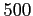

Monte Carlo method is a statistical one. So, in order to get the macroscopic variables at a certain time, we need to compute the average mean value of this variable on a enough long period of time. This is done, in GNU Archimedes, by specifying on how many final time step the mean average value have to be computed. So, for example, if the user wants to compute the average mean value of the macroscopic variables on the last  time steps of the simulation, one have to type in the input file processed by GNU Archimedes
MEDIA 500